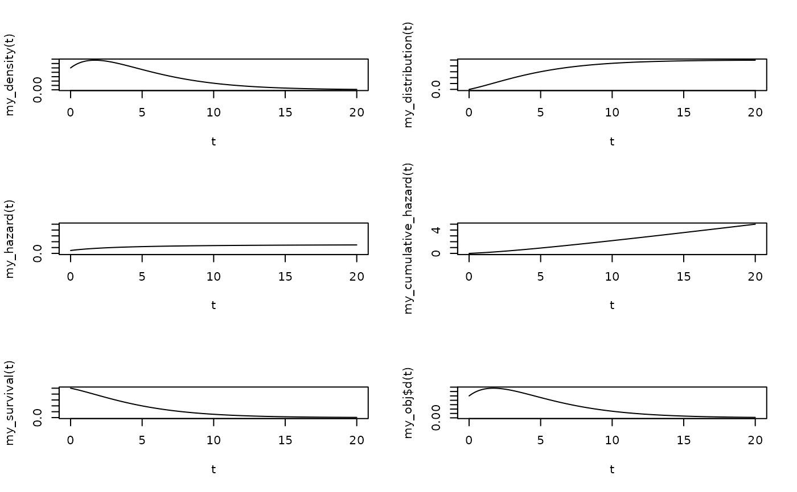

Survival Distributions with piece-wise Constant Hazards and multiple states (function factories)
Source:R/multistate_functions.R
multistate_functions.RdDensitiy, distribution function, hazard function, cumulative hazard function and survival function of multi-state survival functions.
Those functions return functions of one parameter that can be evaluated to
give the density, distribution function, ... The parameters t, Q, pi
and abs are checked only once and not at every function evaluation.
Usage
dmstate_fun(t, Q, pi, abs)
pmstate_fun(t, Q, pi, abs)
hmstate_fun(t, Q, pi, abs)
chmstate_fun(t, Q, pi, abs)
smstate_fun(t, Q, pi, abs)
multistate_functions(t, Q, pi, abs)Value
dmstate_fun gives the density.
pmstate_fun gives the distribution function
hmstate_fun gives the hazard function.
chmstate_fun gives the cumulative hazard function.
smstate_fun gives the survival function.
multistate_functions gives an object of class "miniPCH"
Functions
dmstate_fun(): density of survival distributions with piece-wise constant hazards and multiple statespmstate_fun(): distribution function of survival distributions with piece-wise constant hazards and multiple stateshmstate_fun(): hazard function of survival distributions with piece-wise constant hazards and multiple stateschmstate_fun(): cumulative hazard function of survival distributions with piece-wise constant hazards and multiple statessmstate_fun(): survival function of survival distributions with piece-wise constant hazards and multiple states
Examples
Tint <- 0
Q <- matrix(
c(
-0.3, 0.2, 0.1,
0 ,-0.4, 0.4,
0 , 0, 0
), 3, 3, byrow = TRUE
)
dim(Q) <- c(3,3,1)
pi <- c(1,0,0)
abs <- c(0,0,1)
my_density <- dmstate_fun(Tint, Q, pi, abs)
my_distribution <- pmstate_fun(Tint, Q, pi, abs)
my_hazard <- hmstate_fun(Tint, Q, pi, abs)
my_cumulative_hazard <- chmstate_fun(Tint, Q, pi, abs)
my_survival <- smstate_fun(Tint, Q, pi, abs)
t <- seq(0,20, by=0.1)
par(mfrow=c(3,2))
plot(t, my_density(t), type="l")
plot(t, my_distribution(t), type="l")
plot(t, my_hazard(t), type="l", ylim=c(0,1))
plot(t, my_cumulative_hazard(t), type="l")
plot(t, my_survival(t), type="l")
Tint <- 0
Q <- matrix(
c(
-0.3, 0.2, 0.1,
0 ,-0.4, 0.4,
0 , 0, 0
), 3, 3, byrow = TRUE
)
dim(Q) <- c(3,3,1)
pi <- c(1,0,0)
abs <- c(0,0,1)
my_obj <- multistate_functions(Tint, Q, pi, abs)
t <- seq(0,20, by=0.1)
plot(t, my_obj$d(t), type="l")
